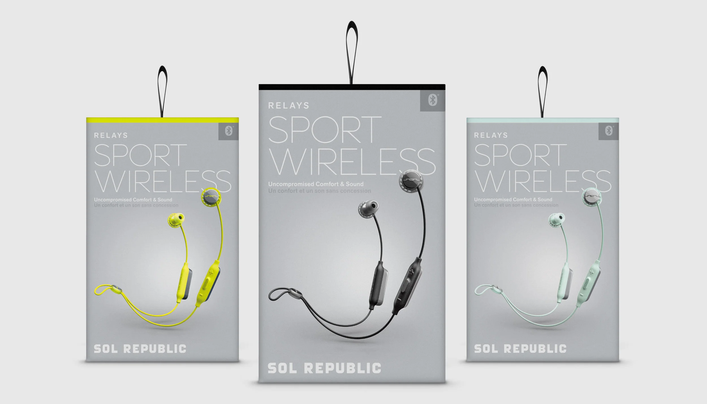
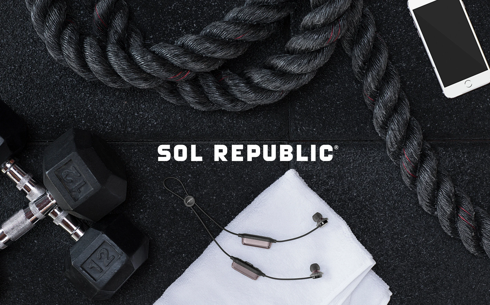
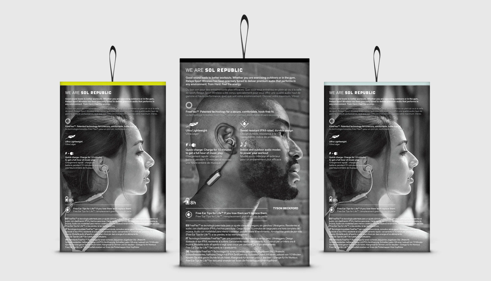
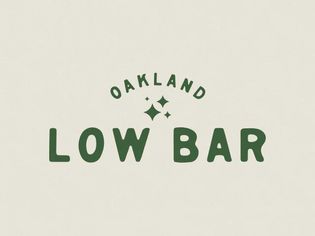

Front.

Creative direction for the Relays Sport Wireless launch.
You are standing in a big box store with about eleven minutes to spare, and there are nine boxes in front of you shouting the same four words at exactly the same volume.
So the job was never "design a nice box." The job was win the eleven minutes. Front panel grabs you from six feet out. Back panel closes you once it is actually in your hands.
Front grabs. Back closes. No third panel required.


